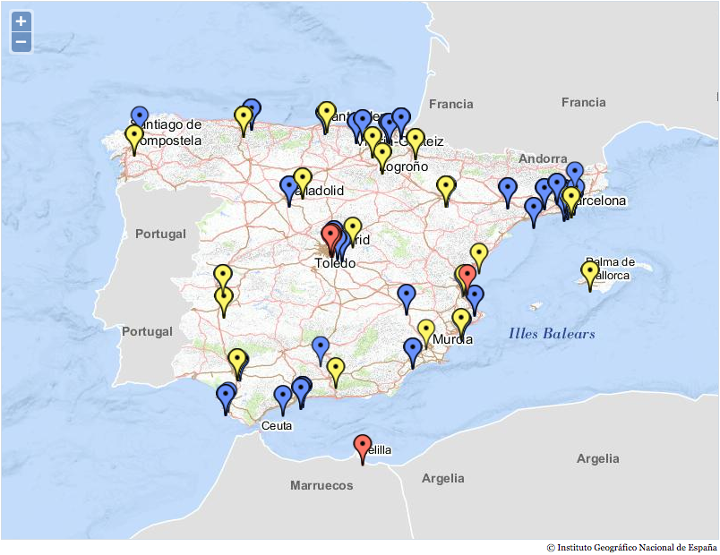

TPAC 2016
Lisboa, 20 sep. 2016
| 15:30 - 16:00 | Introducción presentación de los asistentes |
|---|---|
| 16:00 - 16:30 | Estado actual y oportunidades de evolución en open data |
| 16:30 - 17:00 | Participación en la IODC de Madrid |
| 17:00 - 17:30 | Próximos pasos |
Forum where Spanish public bodies, citizens and industry involved in Open Data and PSI reuse are gathered together to discuss and seize synergies among them. This Group is an evolution of the "Grupo Zaragoza", a non-profit community, composed of all-governmental-level administrations and key players in PSI reuse, which has boosted the Open Data in Spain. Future and ongoing Open Data initiatives may reuse this group's work in terms of technology, formats, ontologies, tools, guidelines, etc. This group will not create specifications.
